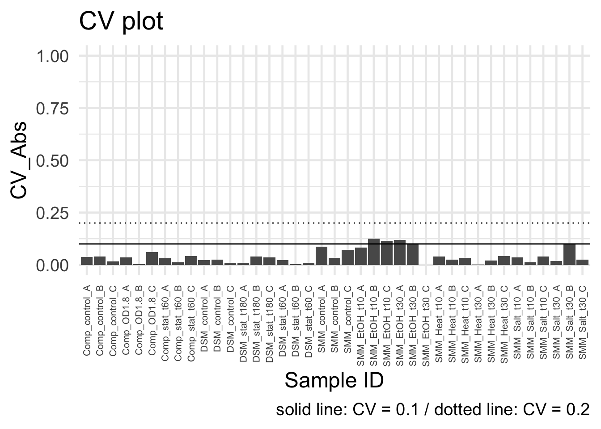
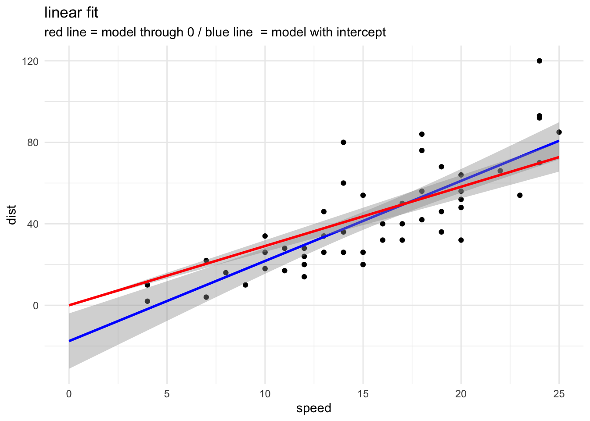
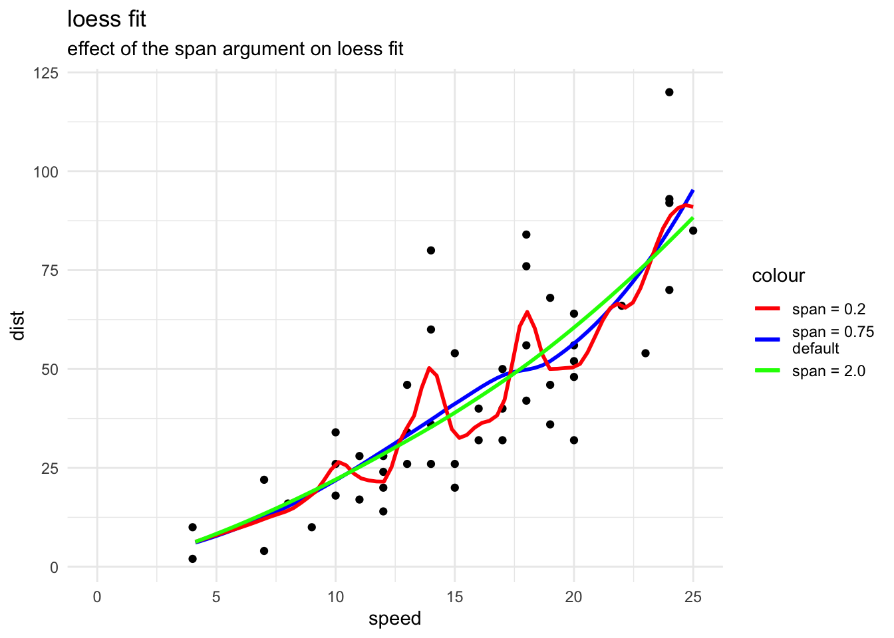
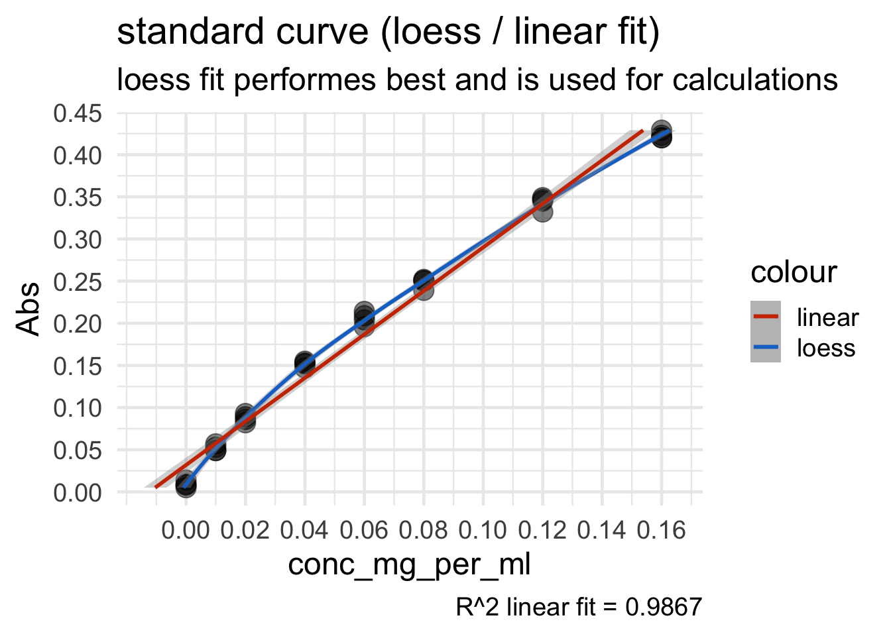
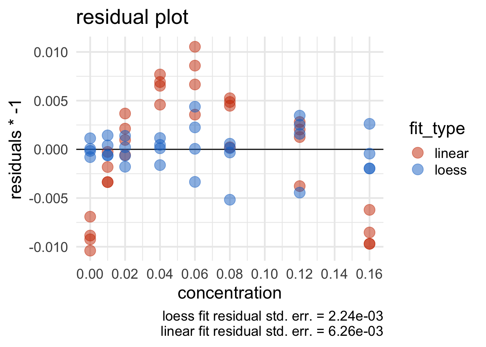
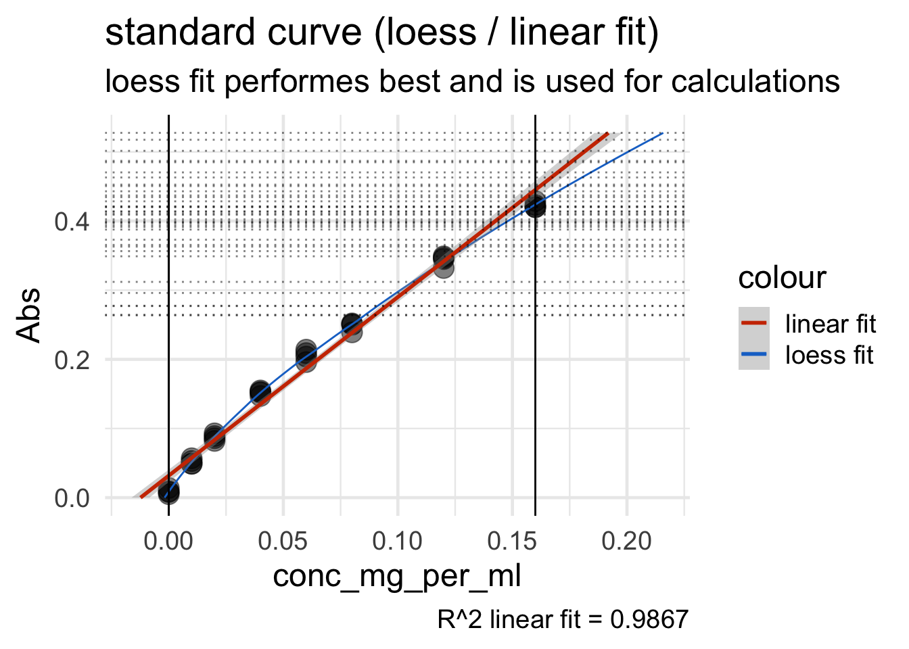
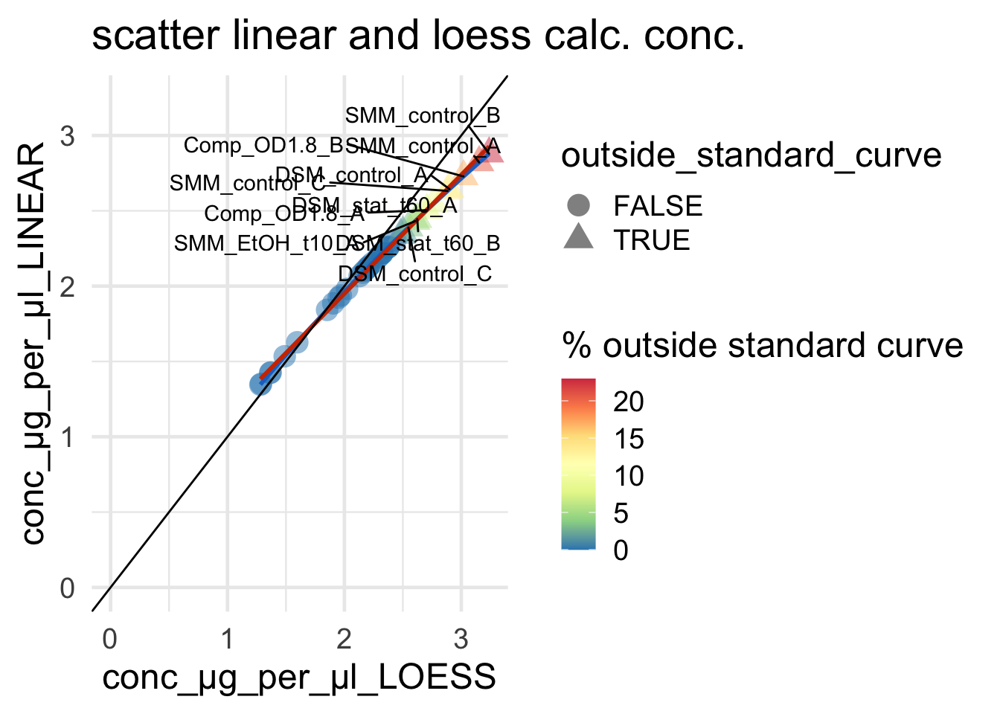

load data from e.g. Nanodrop of your assay and standard curve
Loading packages:
# load packages -----------------------------------------------------------
library(tidyverse)
library(ggrepel)
library(openxlsx)
library(stringi)Load raw data:
# load raw data ------------------------------------------------------------
BCA_assay_data <- read_delim(file = "materials/protein_concentration_determination_BCA/2019_09_12__BCA_standard_curve_and samples_Lysate.txt",col_names = T,delim = "\t")## Parsed with column specification:
## cols(
## `Plate ID` = col_character(),
## `Well ` = col_character(),
## `Sample ID` = col_character(),
## `User ID` = col_character(),
## `Date ` = col_character(),
## `Time ` = col_time(format = ""),
## `conc. ` = col_double(),
## `units ` = col_character(),
## `nm ` = col_double(),
## `Abs. ` = col_double(),
## `Cursor Pos.` = col_double(),
## `Cursor abs.` = col_double(),
## `Norm nm` = col_double(),
## `Norm Abs` = col_double()
## )load standard curve data:
# load standard data --------------------------------------------------------
BCA_std_data <- read_delim(file = "materials/protein_concentration_determination_BCA/2019_09_12__BCA_standard_curve_Lysate.txt",col_names = T,delim = "\t")## Parsed with column specification:
## cols(
## conc_mg_per_ml = col_double(),
## abs1 = col_double(),
## abs2 = col_double(),
## abs3 = col_double(),
## abs4 = col_double()
## )#tidy standard curve data
BCA_std_data_tidy <- BCA_std_data %>% gather(colnames(BCA_std_data)[-1],key = "measurements",value = "Abs")
BCA_std_data_tidy#summarize raw data
BCA_assay_data_summary<- BCA_assay_data %>%
group_by(`Sample ID`) %>%
summarise(meanAbs = mean(`Abs. `),
SD_Abs = sd(`Abs. `),
CV_Abs = sd(`Abs. `)/mean(`Abs. `)) %>%
ungroup()
BCA_assay_data_summary#CV plot
data_cv_plot <- ggplot(BCA_assay_data_summary,aes(`Sample ID`,CV_Abs))+
geom_bar(stat = "identity")+
theme_minimal(base_size = 18)+
theme(axis.text.x = element_text(angle = 90,hjust = 1,vjust = 0.5,size=8))+
labs(title = "CV plot", caption = " solid line: CV = 0.1 / dotted line: CV = 0.2")+
geom_hline(yintercept = 0.1)+
geom_hline(yintercept = 0.2,linetype="dotted")+
ylim(0,1)
data_cv_plot
Check with CV plot if there are outliers in your measurement and if so evaluate in your experimental data why. For example in Nanodrop measurements: Air bubble during measurement?
regression model: relationship between a variable of interest Y and one or more explanatory or predictor variables x With a single predictor, the model is a straight line.
non-linear Regression Model: “nonlinear regression is a form of regression analysis in which observational data are modeled by a function which is a nonlinear combination of the model parameters and depends on one or more independent variables. The data are fitted by a method of successive approximations.” - wikipedia
A linear fit in R is performed with the lm() function. It can be used to carry out regression, single stratum analysis of variance and analysis of covariance (although aov may provide a more convenient interface for these).
lm(formula, data, subset, weights, na.action,
method = "qr", model = TRUE, x = FALSE, y = FALSE, qr = TRUE,
singular.ok = TRUE, contrasts = NULL, offset, ...)lm()| name | description |
|---|---|
| formula | an object of class “formula” (or one that can be coerced to that class): a symbolic description of the model to be fitted. The details of model specification are given under ‘Details’. |
| data* | an optional data frame, list or environment (or object coercible by as.data.frame to a data frame) containing the variables in the model. If not found in data, the variables are taken from environment(formula), typically the environment from which lm is called. |
| subset | an optional vector specifying a subset of observations to be used in the fitting process. |
| weights | an optional vector of weights to be used in the fitting process. Should be NULL or a numeric vector. If non-NULL, weighted least squares is used with weights weights (that is, minimizing sum(w*e^2)); otherwise ordinary least squares is used. See also ‘Details’ |
| na.action | a function which indicates what should happen when the data contain NAs. The default is set by the na.action setting of options, and is na.fail if that is unset. The ‘factory-fresh’ default is na.omit. Another possible value is NULL, no action. Value na.exclude can be useful. |
lm() returnsAn object of class “lm” is a list containing at least the following components:
| name | description |
|---|---|
| coefficients | a named vector of coefficients |
| residuals | the residuals, that is response minus fitted values. |
| fitted.values | the fitted mean values. |
| rank | the numeric rank of the fitted linear model. |
| weights | (only for weighted fits) the specified weights. |
| df.residual | the residual degrees of freedom. |
| call | the matched call. |
| terms | the terms object used. |
| contrasts | (only where relevant) the contrasts used. |
| xlevels | (only where relevant) a record of the levels of the factors used in fitting. |
| offset | the offset used (missing if none were used). |
| y | if requested, the response used. |
| x | if requested, the model matrix used. |
| model | if requested (the default), the model frame used. |
| na.action | (where relevant) information returned by model.frame on the special handling of NAs. |
lm()lm_norm <- lm(dist ~ speed,data = cars)
lm_zero <- lm(dist ~ speed - 1,data = cars) # omitting intercept
#look at output
lm_norm##
## Call:
## lm(formula = dist ~ speed, data = cars)
##
## Coefficients:
## (Intercept) speed
## -17.58 3.93##
## Call:
## lm(formula = dist ~ speed, data = cars)
##
## Residuals:
## Min 1Q Median 3Q Max
## -29.07 -9.53 -2.27 9.21 43.20
##
## Coefficients:
## Estimate Std. Error t value Pr(>|t|)
## (Intercept) -17.579 6.758 -2.60 0.012 *
## speed 3.932 0.416 9.46 1.5e-12 ***
## ---
## Signif. codes: 0 '***' 0.001 '**' 0.01 '*' 0.05 '.' 0.1 ' ' 1
##
## Residual standard error: 15.4 on 48 degrees of freedom
## Multiple R-squared: 0.651, Adjusted R-squared: 0.644
## F-statistic: 89.6 on 1 and 48 DF, p-value: 1.49e-12#plot data with ggplot
ggplot(cars,aes(x = speed,y = dist))+
geom_point()+
labs(title = "linear fit",subtitle = "red line = model through 0 / blue line = model with intercept")+
theme_minimal()+
stat_smooth(formula = y ~ x,method = "lm",col="blue",fullrange = T,xseq = seq(0,25, length=80))+ #add linear model
stat_smooth(formula = y ~ x - 1,method = "lm",col="red",fullrange = T,xseq = seq(0,25, length=80))#+ # add linear model through 0
loess() is a function which fits a polynomial surface determined by one or more numerical predictors, using local fitting. (Local Polynomial Regression Fitting)
loess(formula, data, weights, subset, na.action, model = FALSE,
span = 0.75, enp.target, degree = 2,
parametric = FALSE, drop.square = FALSE, normalize = TRUE,
family = c("gaussian", "symmetric"),
method = c("loess", "model.frame"),
control = loess.control(...), ...)loess()| name | descritpion |
|---|---|
| formula | a formula specifying the numeric response and one to four numeric predictors (best specified via an interaction, but can also be specified additively). Will be coerced to a formula if necessary. |
| data | an optional data frame, list or environment (or object coercible by as.data.frame to a data frame) containing the variables in the model. If not found in data, the variables are taken from environment(formula), typically the environment from which loess is called. |
| weights | optional weights for each case. |
| subset | an optional specification of a subset of the data to be used. |
| na.action | the action to be taken with missing values in the response or predictors. The default is given by getOption(“na.action”). |
| model | should the model frame be returned? |
| span | the parameter α which controls the degree of smoothing. |
| family | if “gaussian” fitting is by least-squares, and if “symmetric” a re-descending M estimator is used with Tukey’s biweight function. Can be abbreviated. |
| control | control parameters: see loess.control. |
loess() returnsAn object of class “lm” is a list containing at least the following components:
| name | description |
|---|---|
| n | number of values for fit |
| fitted | fitted values |
| residuals | vector of residuals |
| … | … |
loess()## Warning in simpleLoess(y, x, w, span, degree = degree, parametric =
## parametric, : pseudoinverse used at 12## Warning in simpleLoess(y, x, w, span, degree = degree, parametric =
## parametric, : neighborhood radius 1## Warning in simpleLoess(y, x, w, span, degree = degree, parametric =
## parametric, : reciprocal condition number 0## Warning in simpleLoess(y, x, w, span, degree = degree, parametric =
## parametric, : There are other near singularities as well. 1loess_norm_0_75default <- loess(dist ~ speed,data = cars,span = 0.75)
loess_norm_2 <- loess(dist ~ speed,data = cars,span = 2)
#look at output
loess_norm_0_75default## Call:
## loess(formula = dist ~ speed, data = cars, span = 0.75)
##
## Number of Observations: 50
## Equivalent Number of Parameters: 4.78
## Residual Standard Error: 15.3## Call:
## loess(formula = dist ~ speed, data = cars, span = 0.75)
##
## Number of Observations: 50
## Equivalent Number of Parameters: 4.78
## Residual Standard Error: 15.3
## Trace of smoother matrix: 5.24 (exact)
##
## Control settings:
## span : 0.75
## degree : 2
## family : gaussian
## surface : interpolate cell = 0.2
## normalize: TRUE
## parametric: FALSE
## drop.square: FALSE#plot data with ggplot
ggplot(cars,aes(x = speed,y = dist))+
geom_point()+
labs(title = "loess fit",subtitle = "effect of the span argument on loess fit")+
theme_minimal()+
stat_smooth(aes(color = "span = 0.75\ndefault"),formula = y ~ x,method = "loess",span = 0.75,se=F,fullrange = T,xseq = seq(0,25, length=80))+ #add linear model
stat_smooth(aes(color = "span = 0.2"),formula = y ~ x,method = "loess",span = 0.2,se=F,fullrange = T,xseq = seq(0,25, length=80))+
stat_smooth(aes(color = "span = 2.0"),formula = y ~ x,method = "loess",span = 2,se=F,fullrange = T,xseq = seq(0,25, length=80))+
scale_color_manual(values = c("span = 0.75\ndefault" = "blue","span = 0.2" = "red","span = 2.0" = "green"))## Warning in simpleLoess(y, x, w, span, degree = degree, parametric =
## parametric, : pseudoinverse used at 12## Warning in simpleLoess(y, x, w, span, degree = degree, parametric =
## parametric, : neighborhood radius 1## Warning in simpleLoess(y, x, w, span, degree = degree, parametric =
## parametric, : reciprocal condition number 0## Warning in simpleLoess(y, x, w, span, degree = degree, parametric =
## parametric, : There are other near singularities as well. 1## Warning: Removed 13 rows containing missing values (geom_smooth).
## Warning: Removed 13 rows containing missing values (geom_smooth).
## Warning: Removed 13 rows containing missing values (geom_smooth).
WARNING: The displayed warnings show you that the span argument should be used wisely since and overfitting might be the result. The default of 0.75 is a very good starting point. Going below that value will result in a more fuzzy fit see above.
lets perform the linear and loess fit for the standard curve
#perform loess fitt/ exhange axis for predict
fit_loess <- loess(formula = conc_mg_per_ml~Abs,data = BCA_std_data_tidy,control=loess.control(surface="direct"))
#perform linear fit / exhange axis for predict
fit_linear <- lm(formula = conc_mg_per_ml~Abs,data = BCA_std_data_tidy)
#summary of fits
summary_loess <- summary(fit_loess)
summary_linear <- summary(fit_linear)
summary_loess## Call:
## loess(formula = conc_mg_per_ml ~ Abs, data = BCA_std_data_tidy,
## control = loess.control(surface = "direct"))
##
## Number of Observations: 32
## Equivalent Number of Parameters: 4.67
## Residual Standard Error: 0.00224
## Trace of smoother matrix: 5.12 (exact)
##
## Control settings:
## span : 0.75
## degree : 2
## family : gaussian
## surface : direct
## normalize: TRUE
## parametric: FALSE
## drop.square: FALSE##
## Call:
## lm(formula = conc_mg_per_ml ~ Abs, data = BCA_std_data_tidy)
##
## Residuals:
## Min 1Q Median 3Q Max
## -0.01053 -0.00466 -0.00111 0.00438 0.01040
##
## Coefficients:
## Estimate Std. Error t value Pr(>|t|)
## (Intercept) -0.01234 0.00191 -6.45 4e-07 ***
## Abs 0.38724 0.00821 47.16 <2e-16 ***
## ---
## Signif. codes: 0 '***' 0.001 '**' 0.01 '*' 0.05 '.' 0.1 ' ' 1
##
## Residual standard error: 0.00626 on 30 degrees of freedom
## Multiple R-squared: 0.987, Adjusted R-squared: 0.986
## F-statistic: 2.22e+03 on 1 and 30 DF, p-value: <2e-16Now lets get the residuals and the annotation text for the plots
#get std. residual error for bith fits and r-squared for linear fit; fort loess since it is a non-linear approach R-squared not meaningfull
# because the sum of squares doesn´t sum up to a constant value
residual_std_err__linear <- summary_linear$sigma
linear_r_sqared <- summary_linear$r.squared
residual_std_err__loess <- summary_loess$s
#get residuals
residuals_tidy<- bind_rows(tibble(concentration = BCA_std_data_tidy$conc_mg_per_ml, residuals = summary_linear$residuals, fit_type = "linear"),
tibble(concentration = BCA_std_data_tidy$conc_mg_per_ml, residuals = summary_loess$residuals, fit_type = "loess"))
#annotation text for
annot_text <- paste("loess fit residual std. err. = ",formatC(residual_std_err__loess, format = "e", digits = 2),"\n",
"linear fit residual std. err. = ",formatC(residual_std_err__linear, format = "e", digits = 2),sep="")Based on the residuals lets decide automatically which fits suits better the data.
Background from BCA protocol: Note: If using curve-fitting software, use a best-fit polynomial equation rather than a linear equation for the standard curve. If plotting results by hand, a point-to-point fit is preferable to a linear fit to the standard points.
#decission based on fit residual std. err.
if(residual_std_err__linear>residual_std_err__loess){
subtitle_text <- "loess fit performes best and is used for calculations"
}else{
subtitle_text <- "linear fit performes best and is used for calculations"
}#standard plot
standard_plot<- ggplot(BCA_std_data_tidy,aes(Abs,conc_mg_per_ml))+
geom_point(size=5,alpha = 0.5)+
stat_smooth(aes(col="loess"),method = "loess")+
stat_smooth(aes(col="linear"),method = "lm")+
scale_color_manual(values = c("loess" = "dodgerblue3","linear" = "orangered3"))+
theme_minimal(base_size = 18)+
scale_y_continuous(breaks = seq(0,0.16,length.out = 9))+
scale_x_continuous(breaks = seq(0,0.5,length.out = 11))+
labs(title = "standard curve (loess / linear fit)",
subtitle = subtitle_text, caption = paste("R^2 linear fit = ", round(linear_r_sqared,4),sep = ""))+
coord_flip()
standard_plot## `geom_smooth()` using formula 'y ~ x'
## `geom_smooth()` using formula 'y ~ x'
#residuals plot
#*-1 coord flip
standard_res_plot <- ggplot(residuals_tidy,aes(concentration,residuals*-1,color=fit_type))+
geom_hline(yintercept = 0) +
geom_point(size=5,alpha = 0.5)+
scale_color_manual(values = c(loess="dodgerblue3",linear = "orangered3"))+
scale_x_continuous(breaks = seq(0,0.16,length.out = 9))+
theme_minimal(base_size = 18)+
labs(title = "residual plot",caption = annot_text)
standard_res_plot
use predict() function to predict values based on standard curve
predict is a generic function for predictions from the results of various model fitting functions. The function invokes particular methods which depend on the class of the first argument.
for most models predict() is a wrapper for there own functions: like: - predict.loess - predict.lm - predict.glm - predict.nls - …
Most of the functions allow the variable newdata, which allow the calculation of new values based on the model.
## S3 method for class 'lm'
predict(object, newdata, se.fit = FALSE, scale = NULL, df = Inf,
interval = c("none", "confidence", "prediction"),
level = 0.95, type = c("response", "terms"),
terms = NULL, na.action = na.pass,
pred.var = res.var/weights, weights = 1, ...)
## S3 method for class 'loess'
predict(object, newdata = NULL, se = FALSE,
na.action = na.pass, ...)Now we perform the prediction based on the best suited model. We also provide the dilution factor used in our BCA assay for sample dilution. Here we used a 15fold dilution.
dilution_factor = 15 #
#decission based on fit residual std. err.
if(residual_std_err__linear>residual_std_err__loess){
BCA_assay_data_summary$conc_µg_per_µl <- predict(object = fit_loess,newdata = unlist(BCA_assay_data_summary$meanAbs))*dilution_factor
}else{
BCA_assay_data_summary$conc_µg_per_µl <- predict(object = fit_linear,newdata = new <- data.frame(Abs = unlist(BCA_assay_data_summary$meanAbs)))*dilution_factor
}
BCA_assay_data_summaryGenerate a more detailed overview:
#generate standard detailed
BCA_assay_data_summary_detailed <- BCA_assay_data_summary
BCA_assay_data_summary_detailed$conc_µg_per_µl_LOESS <- predict(object = fit_loess,newdata = unlist(BCA_assay_data_summary$meanAbs))*dilution_factor
BCA_assay_data_summary_detailed$conc_µg_per_µl_LINEAR <- predict(object = fit_linear,newdata = new <- data.frame(Abs = unlist(BCA_assay_data_summary$meanAbs)))*dilution_factor
BCA_assay_data_summary_detailed#add outside standard curve logic
BCA_assay_data_summary_detailed <- BCA_assay_data_summary_detailed %>% mutate(outside_standard_curve = if_else(condition = meanAbs>max(BCA_std_data_tidy$Abs),
true = TRUE,
false = FALSE),
outside_standard_curve_percentage = if_else(condition = meanAbs>max(BCA_std_data_tidy$Abs),
true = (meanAbs/max(BCA_std_data_tidy$Abs)*100)-100,
false = 0))Since a assay measurement can be above the standard curve value a higher prediction of values must be performed to span the samples measured in the assay.
#loess long fit
loess_fit_predict <- tibble(Abs = seq(0,max(BCA_assay_data_summary_detailed$meanAbs),length.out = 100))
loess_fit_predict$conc_mg_per_ml <- predict(object = fit_loess,newdata = loess_fit_predict$Abs)
loess_fit_predict#measurements plot
measurements_plot<- ggplot(BCA_std_data_tidy,aes(Abs,conc_mg_per_ml))+
geom_point(size=5,alpha = 0.5)+
geom_line(aes(color="loess fit"),data = loess_fit_predict)+
stat_smooth(aes(color="linear fit"),method = "lm",fullrange=TRUE)+
scale_color_manual(values = c("loess fit" = "dodgerblue3","linear fit" = "orangered3"))+
theme_minimal(base_size = 18)+
labs(title = "standard curve (loess / linear fit)",
subtitle = subtitle_text, caption = paste("R^2 linear fit = ", round(linear_r_sqared,4),sep = ""))+
geom_vline(xintercept = BCA_assay_data_summary_detailed$meanAbs,col="black",alpha=0.5, linetype="dotted")+ # add horizontal line indicating samples
geom_hline(yintercept = min(BCA_std_data_tidy$conc_mg_per_ml))+
geom_hline(yintercept = max(BCA_std_data_tidy$conc_mg_per_ml))+
coord_flip()
measurements_plot## `geom_smooth()` using formula 'y ~ x'
Here dotted lines displaying the measured values from BCA assay from samples
#scatter plot
# get maximum values
max_scatter <- max(c(BCA_assay_data_summary_detailed$conc_µg_per_µl_LOESS,BCA_assay_data_summary_detailed$conc_µg_per_µl_LINEAR))
scatter_conc<- ggplot(BCA_assay_data_summary_detailed)+
geom_point(aes(x=conc_µg_per_µl_LOESS,
y=conc_µg_per_µl_LINEAR,
shape=outside_standard_curve,
color=outside_standard_curve_percentage),size=5,alpha=0.5)+
stat_smooth(aes(x=conc_µg_per_µl_LOESS,
y=conc_µg_per_µl_LINEAR),method = "loess",color = "dodgerblue3")+
stat_smooth(aes(x=conc_µg_per_µl_LOESS,
y=conc_µg_per_µl_LINEAR),method = "lm",color = "orangered3")+
coord_cartesian(xlim = c(0,max(max_scatter)),ylim = c(0,max(max_scatter)))+
theme_minimal(base_size = 18)+
scale_color_distiller(palette = "Spectral")+
geom_abline(slope = 1,intercept = 0)+
labs(color="% outside standard curve",title = "scatter linear and loess calc. conc.")
#label topN out of standard curve range values
if(sum(BCA_assay_data_summary_detailed$outside_standard_curve)>0){
scatter_conc <- scatter_conc+geom_text_repel(data = BCA_assay_data_summary_detailed %>%
top_n(outside_standard_curve_percentage,n = 10),
mapping = aes(x=conc_µg_per_µl_LOESS,
y=conc_µg_per_µl_LINEAR,
label = `Sample ID`),min.segment.length = 0.001)
}
scatter_conc## `geom_smooth()` using formula 'y ~ x'
## `geom_smooth()` using formula 'y ~ x'
BCA_assay_data_summary_detailed %>%
filter(outside_standard_curve>0) %>%
arrange(desc(outside_standard_curve))Saving in Excel might be useful when sending Data back to cooperation partners. But I highly recommend use more .csv of .txt files.
The resulting Excel file:
2019_09_12__BCA_protein_concentration_determination.xlsx
#split dataname BR / condition
split_names_df<- do.call(rbind.data.frame,lapply(stri_split_regex(stri_reverse(as.character(BCA_assay_data_summary_detailed$`Sample ID`)),
pattern = '_', n = 2),
stri_reverse)
)
colnames(split_names_df) <- c("BR","condition")
BCA_assay_data_summary_detailed <- cbind(BCA_assay_data_summary_detailed,as_tibble(split_names_df))
#write raw data to excel
excel_output <- createWorkbook()
addWorksheet(wb = excel_output, sheetName = "BCA_assay_data_summary_detailed")
#write data into workbook
writeDataTable(wb = excel_output,sheet = "BCA_assay_data_summary_detailed", x = BCA_assay_data_summary_detailed, startRow = 1, startCol = 1, tableStyle = "TableStyleMedium1")
#decission based on fit residual std. err.
if(residual_std_err__linear>residual_std_err__loess){
#loess
addWorksheet(wb = excel_output, sheetName = "protein_conc_LOESS_lysate")
protein_conc_excel_lysate<- BCA_assay_data_summary_detailed%>%
select(conc_µg_per_µl_LOESS,BR,condition) %>%
spread(key = BR,value = conc_µg_per_µl_LOESS) %>%
arrange(condition)
#write data into workbook
writeDataTable(wb = excel_output,sheet = "protein_conc_LOESS_lysate", x = protein_conc_excel_lysate, startRow = 1, startCol = 1, tableStyle = "TableStyleMedium1")
}else{
addWorksheet(wb = excel_output, sheetName = "protein_conc_LINEAR_lysate")
protein_conc_excel_lysate<- BCA_assay_data_summary_detailed%>%
select(conc_µg_per_µl_LINEAR,BR,condition) %>%
spread(key = BR,value = conc_µg_per_µl_LINEAR) %>%
arrange(condition)
#write data into workbook
writeDataTable(wb = excel_output,sheet = "protein_conc_LINEAR_lysate", x = protein_conc_excel_lysate, startRow = 1, startCol = 1, tableStyle = "TableStyleMedium1")
}
saveWorkbook(wb = excel_output,file = "2019_09_12__BCA_protein_concentration_determination.xlsx",overwrite = T)